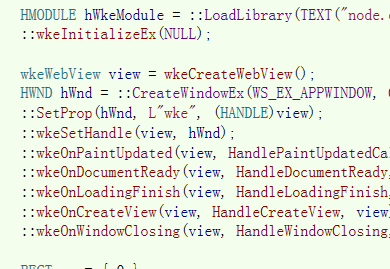

What it's all about
使用Miniblink构建您的软件界面、以及浏览网页

为什么要做miniblink？
因为几乎没有别的选择了！
市面上作为嵌入组件的几款浏览器内核，如CEF，几乎都有100多M。如果您只想在几M的小软件里显示网页，
展示几个简单图表，您会用到chromium里的pdf、天城语支持、多进程架构吗？
Miniblink为您解决这种尴尬。10余M的体积包含了chromium完整的网页排版渲染能力。

Miniblink使用简单吗？
简直不要太简单！
Miniblink导出的是纯C接口，任何语言都可以嵌入
如果你使用过cef，你也许会被它接口的繁琐震惊。单纯的一个退出流程，cef都有N个回调，处理N个流程。 这一切，在Miniblink里不复存在。启动速度、内存占用？
比chrome更快，更小
Miniblink仅使用了chroium的排版引擎，保持了排版能力的同时，提升了130%左右启动速度，40%左右内存占用